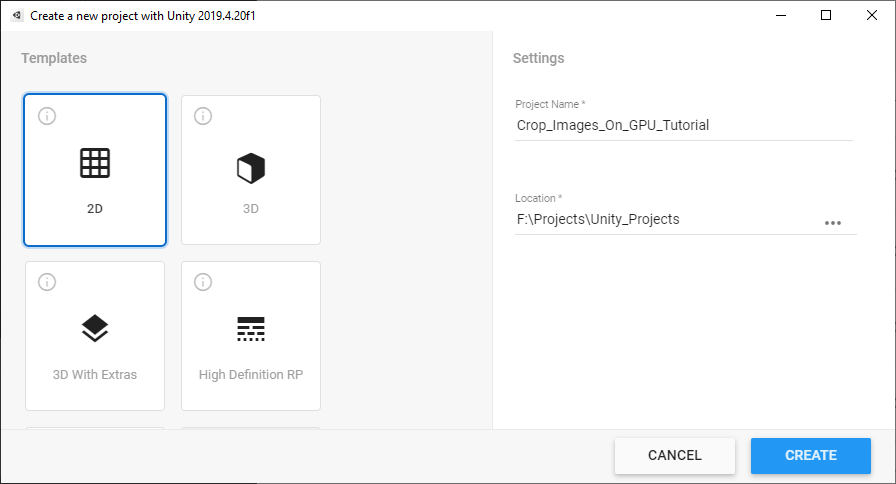
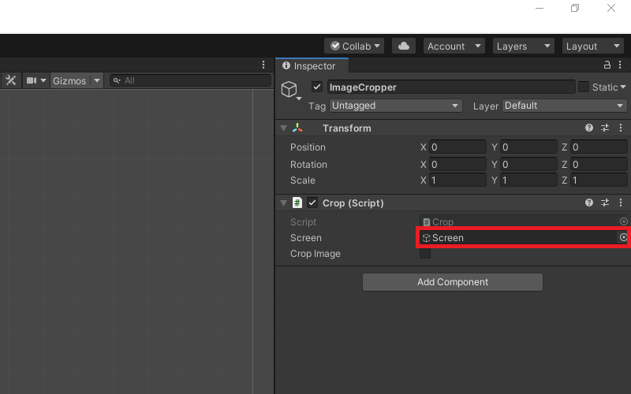
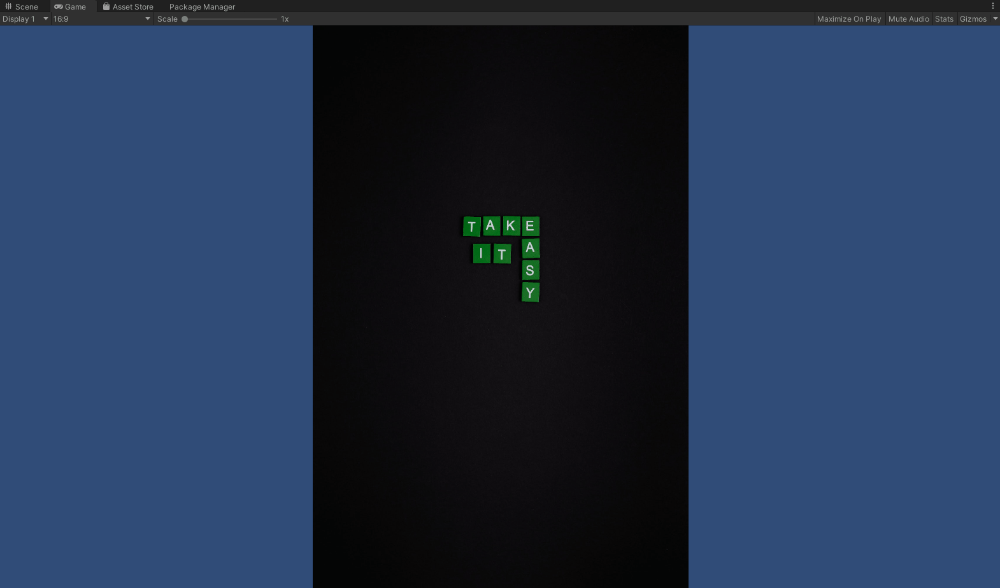

How to Crop Images With a GPU in Unity
- Introduction
- Create a 2D Unity Project
- Create
CropScript - Create Screen GameObject
- Create ImageCropper
- Test it Out
- Conclusion
Introduction
In this post, we cover how to create a square crop of an image in Unity without using a shader. You can also adapt the approach described in this tutorial to crop other parts of images.
Create a 2D Unity Project
Open the Unity Hub and create a new 2D project. I’m using Unity 2019.4.20f1, but you should be fine using other versions.

Create Crop Script
In Unity, right-click an empty space in the Assets folder and select C# Script in the Create submenu. Name the new script, Crop and open it in your code editor.

Define Variables
Create a public GameObject variable called screen. We’ll be using this screen to confirm our script is correctly cropping the test images. Add a public bool variable called cropImage as well. This will let us toggle whether to crop the image during runtime. Lastly, we’ll create a private RenderTexture called image to store a copy of the original test image.
public class Crop : MonoBehaviour
{
[Tooltip("The screen to which the test image is attached")]
public GameObject screen;
[Tooltip("Toggle whether to crop the test image")]
public bool cropImage;
// A copy of the original test image
private RenderTexture image;
// Start is called before the first frame update
void Start()Define Start() Method
In the Start() method, we’ll store a copy the original test image in the image RenderTexture. We can do so by getting a reference to the Texture attached to the screen and using the Graphics.Blit() method. We’ll also adjust the camera so that we can see the entire image.
// Start is called before the first frame update
void Start()
{
// Get a reference to the image texture attached to the screen
Texture screenTexture = screen.GetComponent<MeshRenderer>().material.mainTexture;
// Create a new RenderTexture with the same dimensions as the test image
image = new RenderTexture(screenTexture.width, screenTexture.height, 24, RenderTextureFormat.ARGB32);
// Copy the screenTexture to the image RenderTexture
Graphics.Blit(screenTexture, image);
// Get a reference to the Main Camera object
GameObject mainCamera = GameObject.Find("Main Camera");
// Adjust the camera so that the whole image is visible
mainCamera.GetComponent<Camera>().orthographicSize = image.height / 2;
}Define Update() Method
First, we need to make another copy of the original image so that we can edit it. We’ll store this copy in a temporary RenderTexture called rTex that will get released at the end of the method.
We can’t change the dimensions of a RenderTexture after it’s been created. Instead, we’ll create a cropped image by copying part of rTex to another temporary RenderTexture called tempTex that will be square. We can copy the square image to rTex after we release the current RenderTexture assigned to rTex and make a new square one.
The size of tempTex will depend on whether the original image is wider or taller. We want to use the smallest side of the original image.
We’ll determine what part of rTex we need to copy by calculating either (image.width - image.height) / 2f or (image.height - image.width) / 2f depending on whether the image is wider or taller.
We can copy part of rTex to tempTex using the Graphics.CopyTexture() method. We need to specify several parameters in order to use this method to crop images.
src: The original imagesrcElement: The source texture element, set to0- Not relevant for our use case
srcMip: The mipmap level for the imageRenderTexture, set to0- Not relevant for our use case
srcX: The X coordinate of the top left corner of the center square of the original imagesrcY: The Y coordinate of the top left corner of the center square of the original imagesrcWidth: Width of the new square imagesrcHeight: Height of the new square imagedst: An empty squareRenderTexturedstElement: The destination texture element, set to0- Not relevant for our use case
dstMip: The mipmap level for destination texture, set to0- Not relevant for our use case
dstX: The X coordinate of the top left corner of the new square imagedstY: The Y coordinate of the top left corner of the new square image
After we copy tempTex back to rTex we’ll update the Texture for the screen with the new square image and adjust the shape of the screen to fit the new image.
// Update is called once per frame
void Update()
{
// Allocate a temporary RenderTexture with the original image dimensions
RenderTexture rTex = RenderTexture.GetTemporary(image.width, image.height, 24, image.format);
// Copy the original image
Graphics.Blit(image, rTex);
if (cropImage)
{
// Stores the size of the new square image
int size;
// Stores the coordinates in the original image to start copying from
int[] coords;
// Temporarily tores the new square image
RenderTexture tempTex;
if (image.width > image.height)
{
// Set the dimensions for the new square image
size = image.height;
// Set the coordinates in the original image to start copying from
coords = new int[] { (int)((image.width - image.height) / 2f), 0 };
// Allocate a temporary RenderTexture
tempTex = RenderTexture.GetTemporary(size, size, 24, image.format);
}
else
{
// Set the dimensions for the new square image
size = image.width;
// Set the coordinates in the original image to start copying from
coords = new int[] { 0, (int)((image.height - image.width) / 2f) };
// Allocate a temporary RenderTexture
tempTex = RenderTexture.GetTemporary(size, size, 24, image.format);
}
// Copy the pixel data from the original image to the new square image
Graphics.CopyTexture(image, 0, 0, coords[0], coords[1], size, size, tempTex, 0, 0, 0, 0);
// Free the resources allocated for the Temporary RenderTexture
RenderTexture.ReleaseTemporary(rTex);
// Allocate a temporary RenderTexture with the new dimensions
rTex = RenderTexture.GetTemporary(size, size, 24, image.format);
// Copy the square image
Graphics.Blit(tempTex, rTex);
// Free the resources allocated for the Temporary RenderTexture
RenderTexture.ReleaseTemporary(tempTex);
}
// Apply the new RenderTexture
screen.GetComponent<MeshRenderer>().material.SetTexture("_MainTex", rTex);
// Adjust the screen dimensions to fit the new RenderTexture
screen.transform.localScale = new Vector3(rTex.width, rTex.height, screen.transform.localScale.z);
// Free the resources allocated for the Temporary RenderTexture
RenderTexture.ReleaseTemporary(rTex);
}Create Screen GameObject
Back in Unity, right-click an empty space in the Hierarchy tab and select Quad from the 3D Object submenu. Name the new object Screen. The size will be updated automatically by the Crop.cs script.

Create ImageCropper
Right-click an empty space in the Hierarchy tab and select Create Empty from the pop-up menu. Name the empty object ImageCropper

With the ImageCropper selected drag and drop the Crop.cs script into the Inspector tab.

Drag and drop the Screen object from the Hierarchy tab onto the Screen parameter in the Inspector tab.

Test it Out
We’ll need some test images to try out the ImageCropper. You can use your own or download the ones I used for this tutorial.
Drag and drop the test images into the Assets folder. Select one of the images and drag it onto the Screen in the Scene.

Next, we need to set our Screen to use an Unlit shader. Otherwise it will be a bit dim. With the Screen object selected, open the Shader drop-down menu in the Inspector tab and select Unlit.

Select Texture from the Unlit submenu.

Now we can click the Play button and toggle the Crop Image checkbox to confirm our script is working properly. If you check the performance stats, you should see that there is basically no performance hit from cropping the image.


Conclusion
That is one method to efficiently crop images on the GPU in Unity. As mentioned earlier, this method can be adapted to crop different parts of the image. You can do so by changing the values for the Graphics.CopyTexture() method to adjust what part of the source image gets copied and where in the target image it gets copied to.
Project Resources: GitHub Repository